April 2022 (version 1.67)
Update 1.67.1: The update addresses this security issue.
Update 1.67.2: The update addresses these issues.
Downloads: Windows: User System Arm64 | Mac: Universal Intel silicon | Linux: deb rpm tarball Arm snap
Welcome to the April 2022 release of Visual Studio Code. There are many updates in this version that we hope you'll like, some of the key highlights include:
- Explorer file nesting - Nest generated files under source files in the Explorer.
- Settings editor filters - Filter button brings up searches such as @Modified settings
- Bracket pair colorization - Colored bracket pairs are now enabled by default.
- Toggle inlay hints - Ctrl+Alt to quickly hide or show inlay hints in the editor.
- Drag and drop to create Markdown links - Drop files into the editor to create Markdown links.
- Find All References in Markdown - Quickly find all references to headers, files, URLs.
- Java extension updates - Now supporting inlay hints and lazy variable resolution.
- UX Guidelines for extension authors - Guidance for VS Code extension UI best practices.
- New Rust language topic - Learn how to use the Rust programming language in VS Code.
If you'd like to read these release notes online, go to Updates on code.visualstudio.com.
Watch the release party: Listen in as the VS Code team discusses some of the new features. You can find the recording of the event on our YouTube channel.
Highlights short: If you just have 60 seconds, check out the April VS Code release highlights video to quickly see what's new.
Insiders: Want to try new features as soon as possible? You can download the nightly Insiders build and try the latest updates as soon as they are available.
Workbench
Explorer file nesting
The Explorer now supports nesting related files based on their names. There are several settings to control this behavior:
explorer.fileNesting.enabled- Controls whether file nesting is enabled at-large. It can be set either globally or for a specific workspace.explorer.fileNesting.expand- Controls whether nested files are expanded by default.explorer.fileNesting.patterns- Controls how files are nested. The default configuration provides nesting intelligence for TypeScript and JavaScript projects, but you're encouraged to modify this to fit your own project's structure. Some examples:
Default configuration:
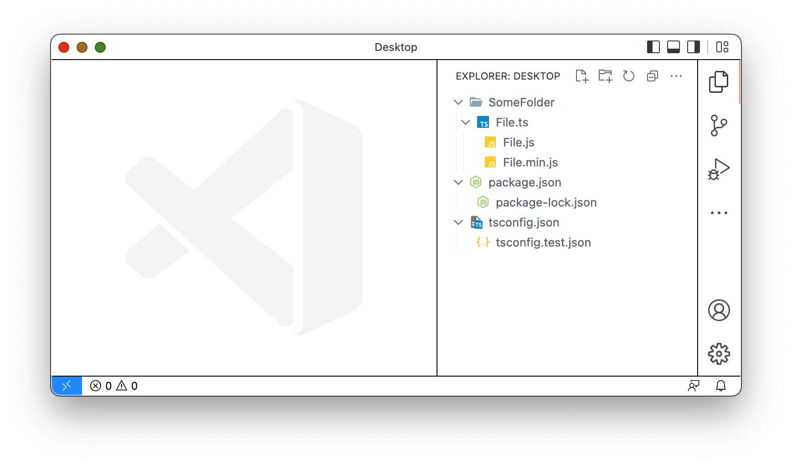
Nesting under index.ts when a file matches the directory's name ("index.ts": "${dirname}.ts"):
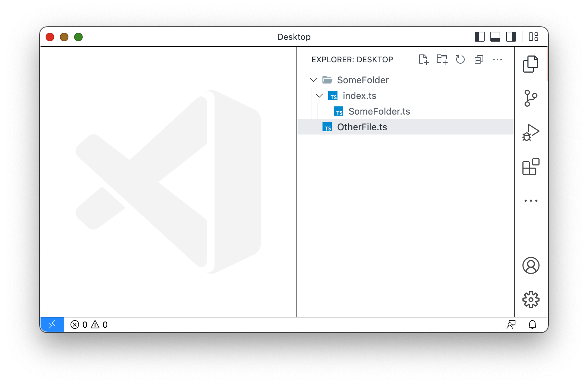
Nesting files that have the same name as a different file but with an added segment ("*": "${basename}.*.${extname}"):
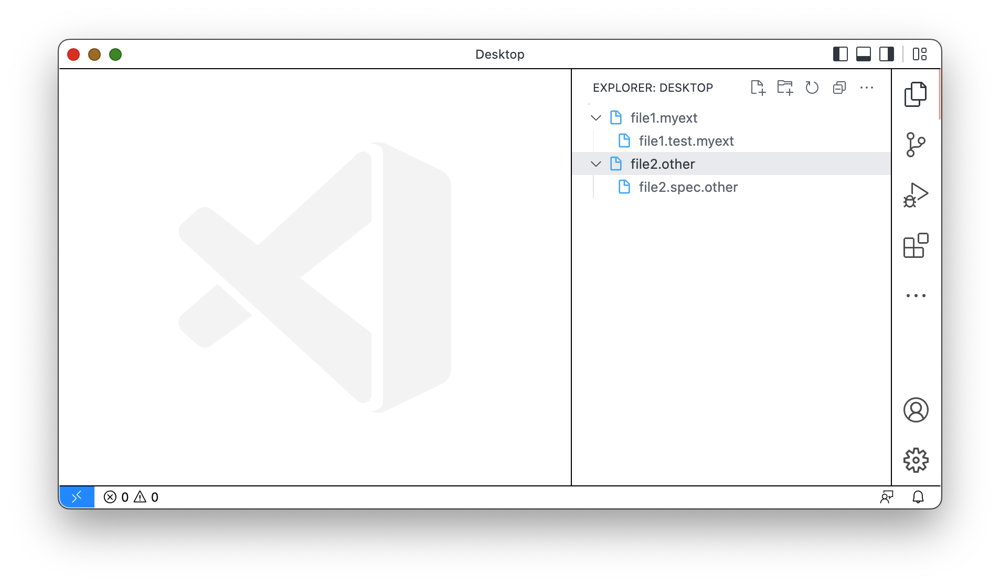
Theme: GitHub Light High Contrast
File nesting has been available through an experimental setting for several iterations. The behavior now is mostly unchanged, except for file operations. The experimental setting explorer.experimental.fileNesting.operateAsGroup has been removed in favor of treating nests as a group when collapsed, but as single entities otherwise. This means that if you want to copy, cut, drag, or delete an entire nested stack of files, you can collapse the nest then operate on it as a single entity. When nested elements are expanded, selections will behave as normal.
Settings editor search filter button
The Settings editor search control now contains a funnel button on the right side. Clicking on the button shows a list of filters that you can apply to the search query in order to filter down the results.
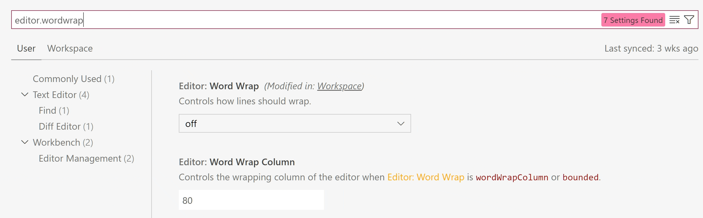
Theme: Light Pink
Settings editor language filter indicator
Settings editor language filters now change the scope text to more clearly show which language is being acted on when a language filter is applied. The short video above shows the Markdown language filter (@lang:markdown) being applied to the filtered settings.
For reference, when a language filter is applied, modifying a setting's value will modify the value of that setting for that language only. Language-specific settings are scoped in settings.json by the language identifier:
"[markdown]": {
"editor.wordBasedSuggestions": false
}
Save files after refactoring
Refactorings, like Rename, often modify multiple files and leave them with unsaved changes (dirty). External development tools usually require these files to be saved. To make this workflow easier, there is a new setting files.refactoring.autoSave that defaults to true and controls if files that were part of a refactoring should be saved automatically.
Exclude dirty editors in editor limit
A new setting workbench.editor.limit.excludeDirty controls if the maximum number of opened editors should exclude dirty editors for counting towards the configured limit. The setting is disabled by default (false).
Bring back "Uncommitted Changes" to Timeline
When we introduced Local History feature last month, we removed the Uncommitted Changes entry from the Git timeline provider because it felt a bit redundant. However, some users see real value in this timeline entry and now you can bring it back by configuring the new git.timeline.showUncommitted setting accordingly.
New editor placeholder when opening fails
When an editor fails to open, VS Code no longer shows a notification and reveals the previous opened editor. Instead, there is a generic placeholder with the error message and, in some cases, actions to resolve the error.
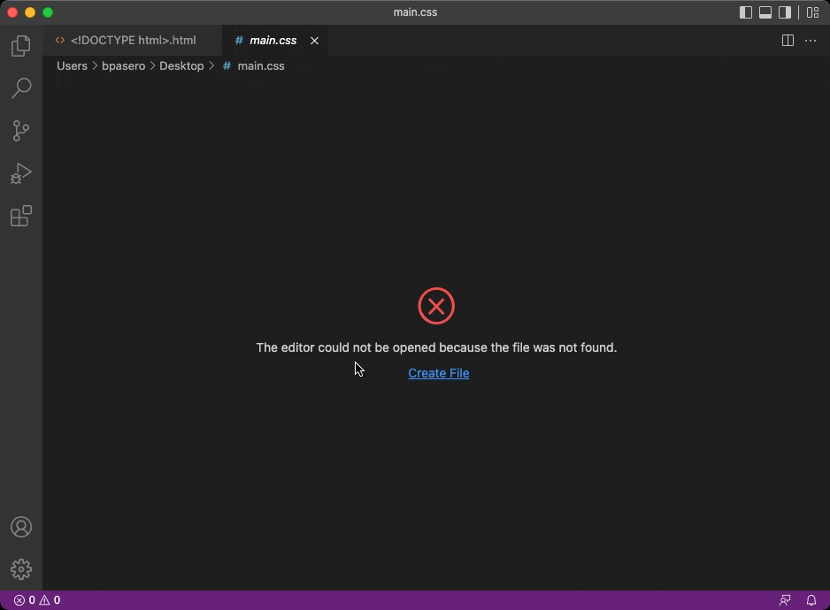
Language status improvements
The language status item now shows formatter conflicts - those happen when multiple formatters for a language are installed but none of them is configured as the default formatter. Also, the language status item is more prominent when containing severe status.
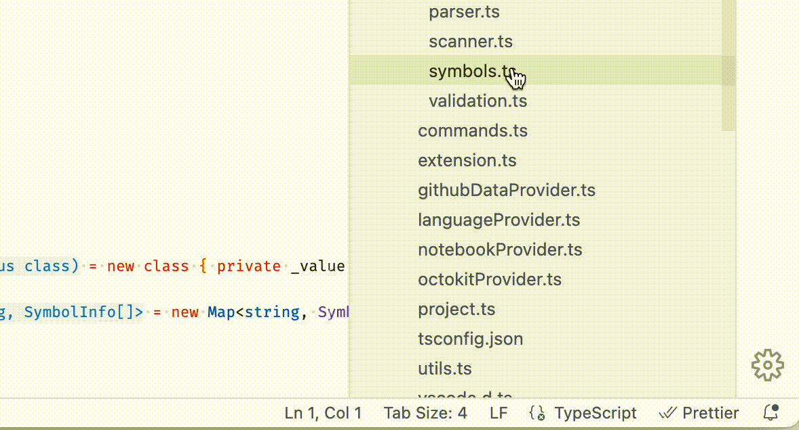
Additionally, the language status item will now show hints to switch languages when your document is suspected to be a different language than what is currently set. This applies only to untitled editors and notebook cells, and can be configured with the workbench.editor.languageDetectionHints setting. Below this is demonstrated in the Handy Dandy Notebook, which supports executing cells in various different languages.
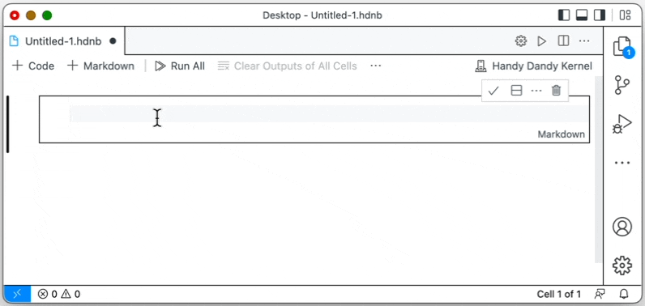
Theme: GitHub Light High Contrast
Show invalid or incompatible extensions
The Extensions view now shows invalid or incompatible extensions in the Installed extension list with error status. For example, if your VS Code version is 1.67.0-insider and you have installed an extension that requires VS Code version 1.68.0, then it will show up in the list with incompatible error status.
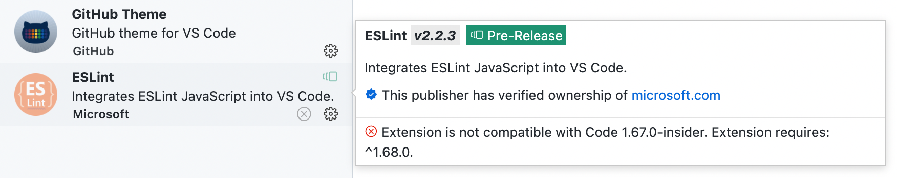
Confirm before quit
A new setting window.confirmBeforeClose can be configured to show a confirmation dialog before quitting the application.
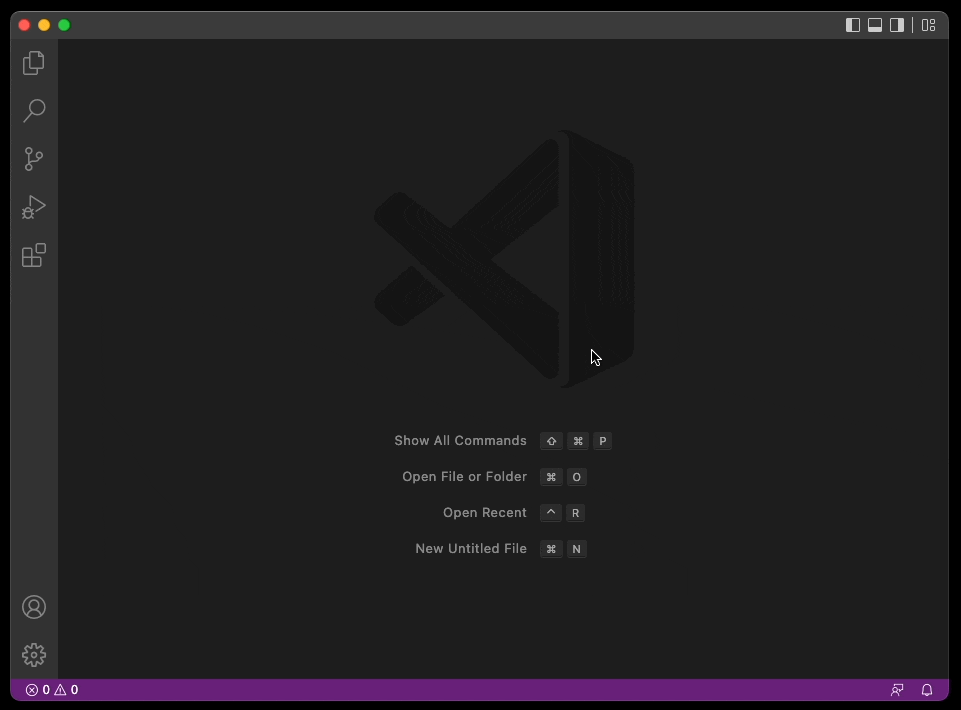
You can either chose keyboardOnly to bring up the confirmation dialog when a keybinding is used or always, even when using the mouse to quit.
Note: The setting is not entirely new and has been available in VS Code for Web for some time.
comments.openView default value
The old default value of comments.openView was file, which caused the Comments view to open every time a file with comments was opened. To make the Comments view less noisy, the new default is firstFile, which causes the Comments view to open only the first time a file with comments is opened during a session.
Multiline comments
Behind the scenes, VS Code has supported multiline comments since the comments UX was finalized, but multiline comments were never surfaced in the UI. You can now see and leave multiline comments.
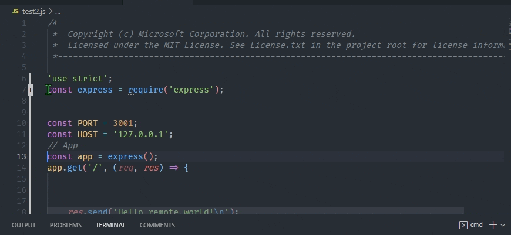
Handle URI in new window
Whenever a VS Code URI contains a query parameter windowId=_blank, VS Code will handle it in a new window. Example: vscode://vscode.git/clone?url=https%3A%2F%2Fgithub.com%2FMicrosoft%2Fvscode-vsce.git&windowId=_blank.
Editor
Bracket pair colorization enabled by default
Given the positive feedback of the new bracket pair colorization feature introduced in the 1.60 release, we enabled bracket pair colorization by default.

Bracket pair colorization can be disabled by setting "editor.bracketPairColorization.enabled" to false.
Bracket pair colorization can also be disabled just for specific languages:
"[typescript]": {
"editor.bracketPairColorization.enabled": false,
},
TextMate grammars can mark tokens as unbalanced
Previously, TextMate grammars could not mark certain brackets as unbalanced, like the closing parenthesis in the case-statement of shell scripts:
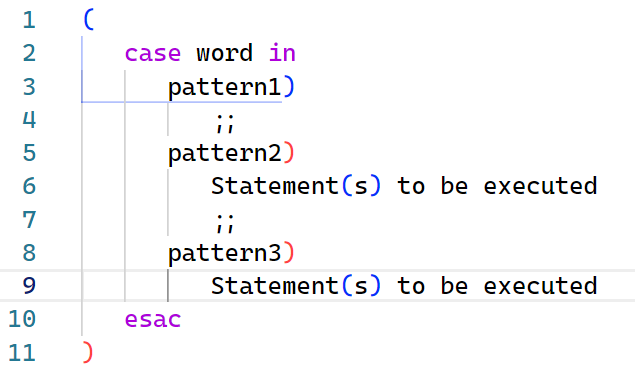
To make bracket pair matching and colorization more robust, TextMate grammar contributions can now express that brackets in certain tokens should not be matched. In the contributes section of an extensions package.json, provided grammars can use the properties balancedBracketScopes (defaults to ["*"]) and unbalancedBracketScopes (defaults to []) to include or exclude scopes for bracket matching.
"grammars": [{
"language": "shellscript",
"scopeName": "source.shell",
"path": "./syntaxes/shell-unix-bash.tmLanguage.json",
"balancedBracketScopes": [ "*" ],
"unbalancedBracketScopes": [ "meta.scope.case-pattern.shell" ]
}],
With this feature, the grammar of the shell script can now indicate that ) in case-statements should not be matched:
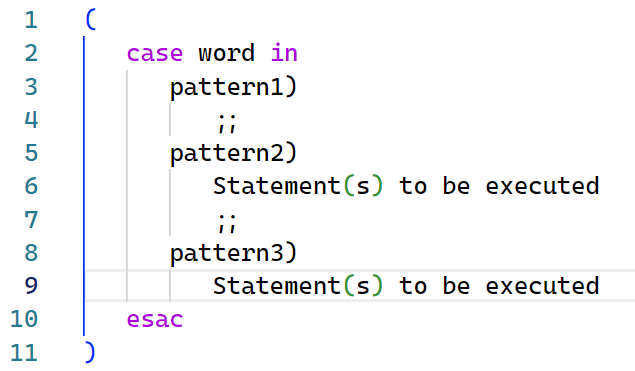
New bracket matching algorithm
Bracket matching now uses the same data structure as bracket colorization. This both increases accuracy and performance.
Old bracket matching behavior (notice that the colors and the highlight decoration do not match):
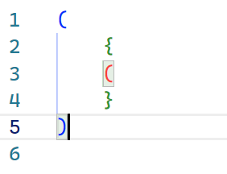
New bracket matching behavior:
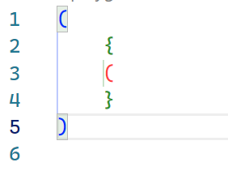
Bracket guide improvements
Horizontal bracket guides now properly support wrapped lines. Also, bracket pairs that only span a single line get their own horizontal bracket guide.
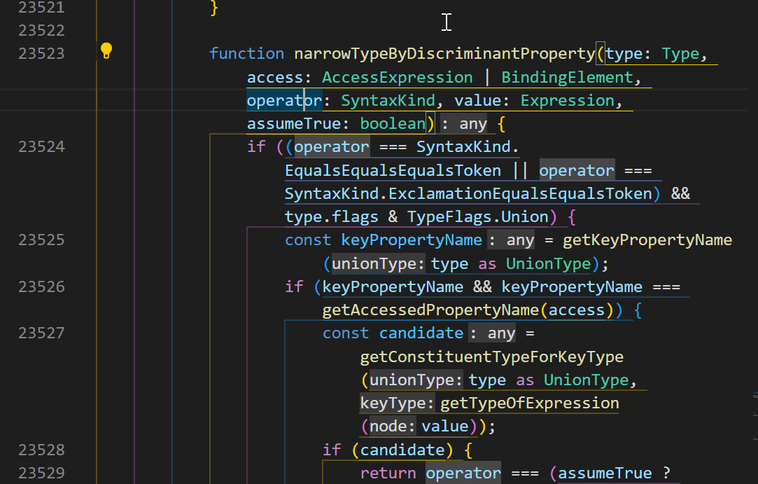
Horizontal bracket guides are disabled by default and can be enabled with "editor.guides.bracketPairsHorizontal": true.
With this release, "editor.guides.highlightActiveIndentation" now accepts the value "always". If set to always, indentation guides are highlighted even if there is already an active bracket pair.
Toggle inlay hints
Inlay hints are a great way to show additional information right within your source code. However, sometimes you just want to see the actual source code. To support quickly hiding inlay hints, the editor.inlayHints.enabled setting has been changed: in addition to on and off, there are also values onUnlessPressed and offUnlessPressed. The on/offUnlessPressed values hide or show inlay hints while Ctrl+Alt is being pressed and held.
Editor › Inlay Hints: Enabled value:
on- Inlay hints are enabled.off- Inlay hints are disabled.onUnlessPressed- Inlay hints shown and hidden withCtrl+Alt.offUnlessPressed- Inlay hints hidden and shown withCtrl+Alt.
Improved inline suggestions
Last month we added the ability to use 👻 ghost text (faint coloring) for quick suggestions. Reminder: you need to use inline for the editor.quickSuggestions setting. We have done some polish work in this area, notably trigger characters and TypeScript "complete functions with arguments" are now supported.
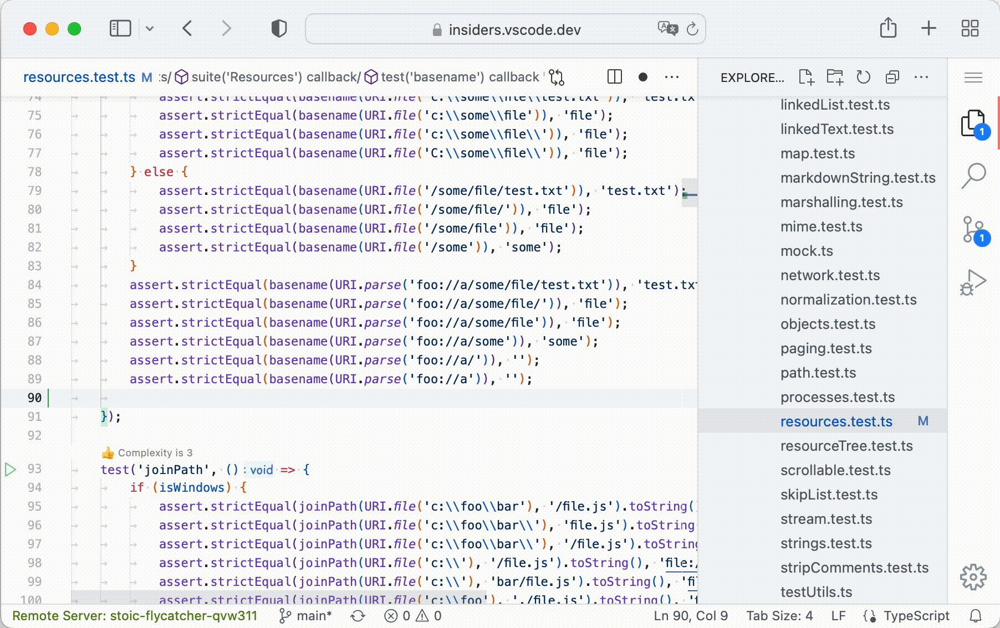
To disable IntelliSense when typing trigger characters, like ., set "editor.suggestOnTriggerCharacters": false. To enable TypeScript function call completions, use "typescript.suggest.completeFunctionCalls": true.
Drag and drop text into editor
You can now drag and drop text from other applications into a text editor. On macOS for example, this lets you drop an emoji from the emoji panel into a text editor:
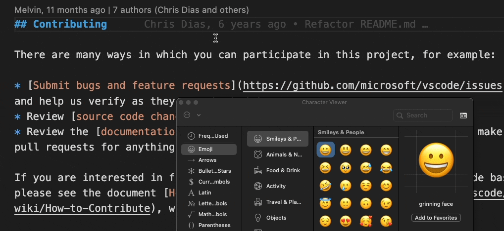
While dragging, a dotted cursor shows you where the text will be inserted.
Terminal
Find result count
When searching in the terminal, the result count and currently selected match index are now displayed in the Find control.
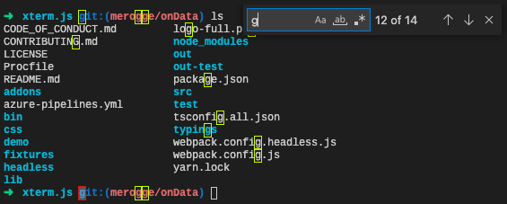
Source Control
Source Control Repositories view
This milestone we have introduced a new setting, scm.repositories.sortOrder, to control the default sort order of the repositories displayed in the Source Control Repositories view. Repositories can be sorted by the order in which they are discovered, by name, and by full path. Changing the sort order can be done using the ... Views and More Actions menu of the Source Control Repositories view and the ... > View & Sort > Repositories menu of the Source Control view.
The short video below shows that the SCM > Repositories: Sort Order setting is by default discovery time, the time when the repositories were selected, and that you can also change the sort order in the Source Control views.
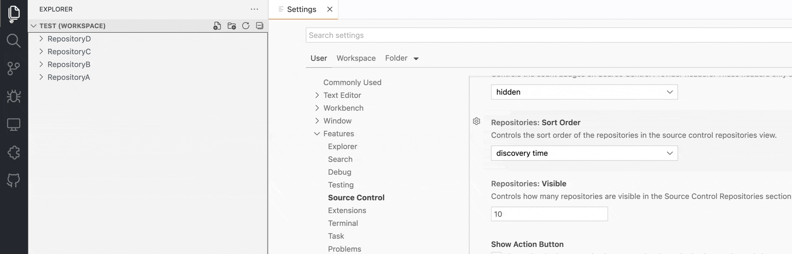
Editor decoration improvements
Last milestone we improved the accessibility of the editor decorators for added/modified lines by adopting a pattern for the modified line decorators. This milestone, we added a new setting, scm.diffDecorationsGutterPattern, that lets users toggle the pattern for the editor decorators.
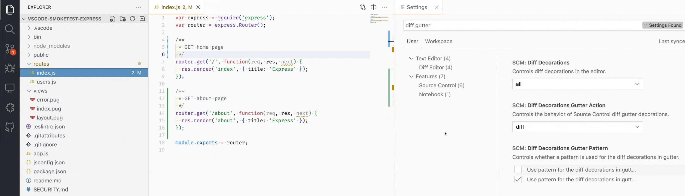
The setting defaults to using the pattern for the modified line decoration but not for added:
"scm.diffDecorationsGutterPattern": {
"added": false,
"modified": true
}
Performance improvements
Users that have the git.untrackedChanges setting set to hidden will experience better performance when working with large repositories. This is achieved by passing the -uno parameter when calling git status.
Expanded remote source providers API
The Git extension API now allows extensions that register or display remote source providers to provide richer information about remote sources.
Remote source providers can now set the description and icon for individual remote sources. Additionally, providers can optionally specify recent remote sources. These are displayed at the top level in the picker for easy access and sorted by timestamp if one is provided.
The expanded API has been adopted by the built-in GitHub extension, as well as the GitHub Repositories and Azure Repos extensions in github.dev and vscode.dev.
Clone from GitHub using SSH
A new setting github.gitProtocol lets you change the default protocol when cloning a repository from GitHub. The value is https by default but can be changed to ssh.
Debugging
Auto-expand lazy variables
A couple months ago, we added support for clicking a button to expand "lazy" variables in the debugger Variables view. There is a new setting, debug.autoExpandLazyVariables, to automatically expand lazy variables without a click.
New button for lazy variables
We've updated the text link button to a real button with the "eye" codicon. The "eye" codicon was also updated to look more eye-like.
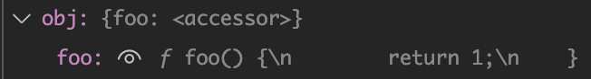
Shift-click to disable breakpoints
You can now Shift+Click on a breakpoint (or conditional breakpoint, or logpoint) to disable it, and to re-enable it.
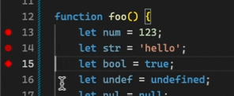
Languages
Markdown: Drop into editor to create link
You can now quickly create Markdown links by dragging and dropping files from VS Code's Explorer into a Markdown editor. Hold Shift while dragging the file over a Markdown editor to drop it into the editor and create a link to it:
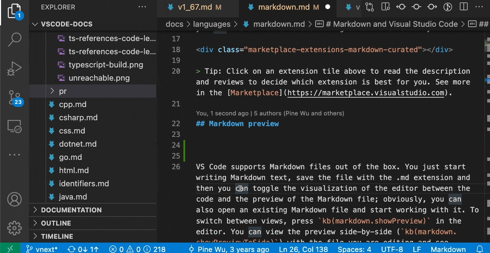
If the file looks like an image, VS Code will automatically insert a Markdown image. Otherwise a normal Markdown link is added.
This also works when dragging some types of files from other applications, such as dragging and dropping images from a web browser:
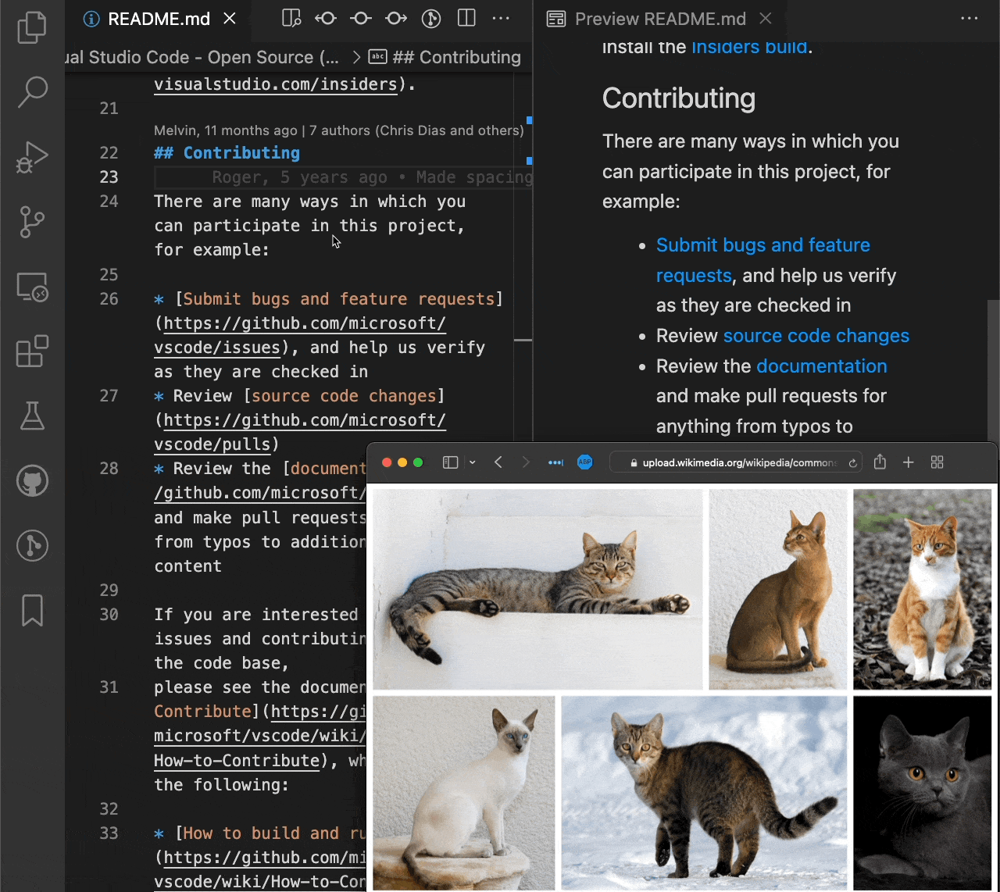
You can disable this drop behavior by setting "markdown.editor.drop.enabled": false.
Markdown: Find All References to headers
VS Code now supports running Find All References in Markdown files for headers. This lets you see all the places where a given header is used within the current workspace, including links to it from other Markdown files.
To get started, place your cursor either on the header itself or on the fragment part of a link to the header (for example, #some-header in [link text](#_some-header) or [link text](/path/to/file#some-header)) and run Find All References.
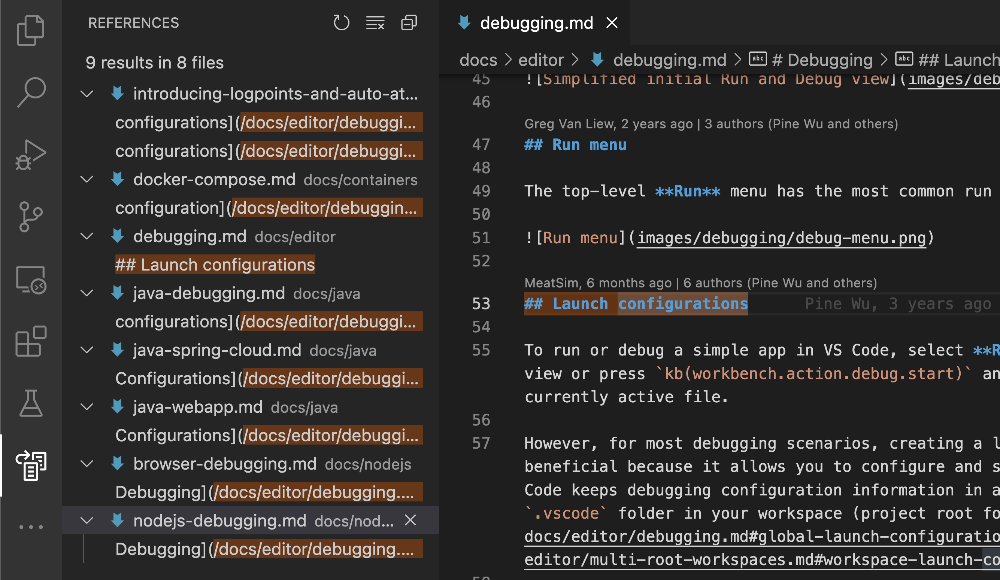
This will show all references in the References view. If you prefer a different view, you can also use the Peek References or Go to References commands.
Markdown: Find all references to reference links
VS Code also supports finding all references to reference links within the current file. This is supported for:
- On
refin[some text][ref]. - On
refin the shorthand link[ref]. - On
refin the link definition[ref]: http://example.com.
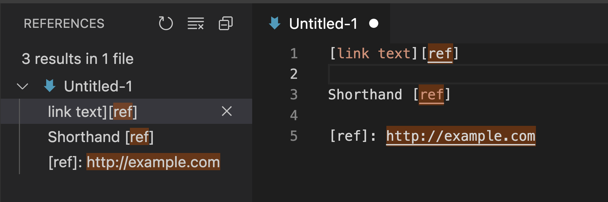
Markdown: Find all references to files
You can also now find all the references to a given Markdown file in the current workspace. Again this includes links across files.
This can be triggered in a few ways:
- To find references to the current Markdown file, use the Markdown: Find File References command.
- To find references to a Markdown file in the Explorer, right-click on it and run Find File References command.
- Run Find All References on the file part of a link to a Markdown file, such as
[text](/link/to/file.md).

This will list all places where a given file is referenced, including references to headers within that file.
Markdown: Find all references to URLs
Finally, we also support finding all places where a given URL is used in the current workspace.
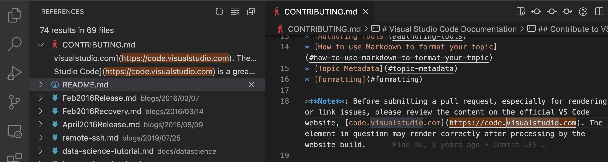
Markdown: Rename headers
Ever change a header in a Markdown file only to realize that you also accidentally broke all links to it? That's where our new rename support for Markdown can help.
To get started, place your cursor on a header and then press F2 to start a rename. Enter the new text for the header and then press Enter to accept. This will both update the current header as well as updating all known links to it in the current workspace.

You can trigger renames on the header itself or on the header component of a link to the header. For example, some-header in [link text](#_some-header) or [link text](/path/to/file#some-header).
Markdown: Rename reference links
You can also rename reference links in Markdown. This will update all the reference links in the current Markdown file:
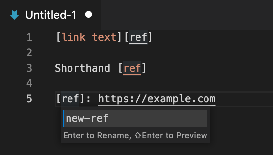
Markdown: Rename files
Rounding out our new Markdown rename support, you can now use F2 on file paths in Markdown links to both rename the file on disk as well as updating all Markdown references to it:
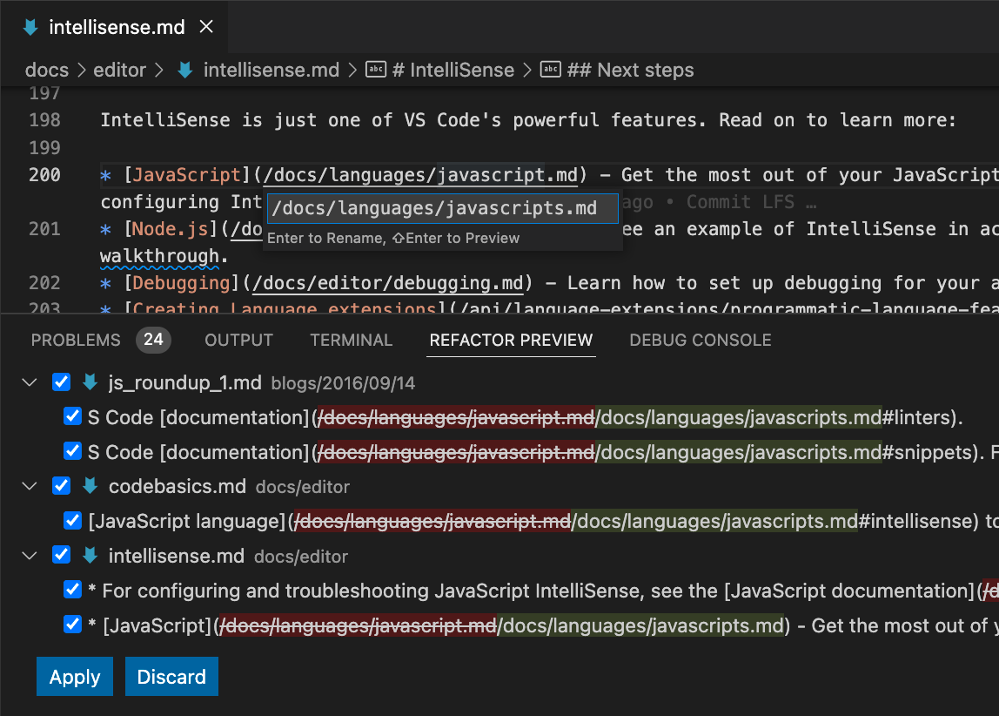
Currently renaming files is only supported using F2 on a link to the file in the text editor. In upcoming iterations, we also plan to support update links when a rename is triggered in the Explorer.
JSON
The new setting json.validate.enable lets you turn off the JSON validation.
VS Code for the Web
Open Remote Repository picker
VS Code for the Web now respects the window.openFoldersInNewWindow setting when you use the Open Remote Repository picker. This aligns the picker behavior with the other versions of VS Code and replaces the Open in New Window Quick Pick item button.
Contributions to extensions
Java
Inlay hints
The Java language service included in the Extension Pack for Java now supports inlay hints to show parameter names for method signatures.

There are three modes for Java parameter name inlay hints:
literals- Enable parameter name hints only for literal arguments (default).all- Enable parameter name hints for literal and non-literal arguments.none- Disable parameter name hints.
Lazy variable resolution
The Debugger for Java extension now supports 'lazy' variables. This feature lets you defer the operations for an expensive variable until you explicitly expand the debugger UI to see it's value.
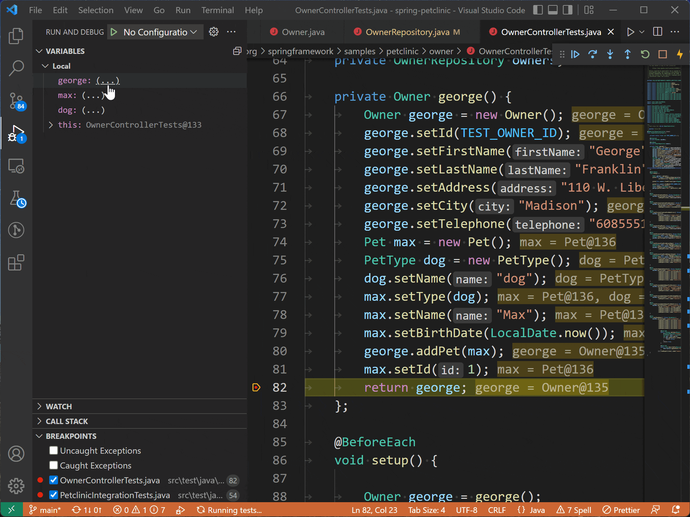
Jupyter
Jupyter PowerToys extension
We are excited to announce the Jupyter PowerToys extension that provides experimental functionality for working with Jupyter notebooks. In its first release, we have prototyped the following features:
- Kernel management panel
- Contextual help
- Execution grouping
We'd love for you to take these for a spin and let us know what you think so that we can hone them into a supported feature someday!
For more information, refer to the README in the vscode-jupyter-powertoys repository.
Web extension
The Jupyter extension can now be installed as a web extension for use with vscode.dev. Functionality is currently limited with support only for notebooks (.ipynb files) being run on Jupyter servers that do not require https.
If you'd like to experiment with the functionality, launch Jupyter from your local machine with:
jupyter --no-browser --NotebookApp.allow_origin_pat=https://.*\.vscode-cdn\.net
And connect to it using the command Jupyter: Specify Jupyter server for connections.
In upcoming releases, we will be enabling more features when running in a browser, including:
- 'https' based servers
- IntelliSense
- Data viewing
- Variable viewing
- Interactive window
- IPyWidgets
- Plot viewing
- Exporting
Jupyter kernel handling
A number of updates were made to Jupyter kernel handling:
- To make it more obvious when a kernel has crashed, the extension now displays this information in cell output.
- There is now troubleshooting guidance in cell output when certain known errors are detected during execution.
- Solving kernel execution problems can be a tricky and time consuming process. We've put together a troubleshooting section on our wiki that we hope can help guide you to a solution quicker. Our GitHub Discussions forum can be a great resource for obtaining help as well.
Python
No reload when changing language servers
The Python extension now supports updating the value of the python.languageServer setting and automatically restarting the language server without needing to reload VS Code.
Black formatter extension
There is now a Black Formatter extension that provides formatting support for Python using the black formatter. A pre-release version of the extension is available to install.
Import organization with isort
New isort extension, which provides import organization using the isort library. A pre-release version of the extension is available.
Remote Development
Work continues on the Remote Development extensions, which allow you to use a container, remote machine, or the Windows Subsystem for Linux (WSL) as a full-featured development environment.
You can learn about new extension features and bug fixes in the Remote Development release notes.
GitHub Pull Requests and Issues
Work continues on the GitHub Pull Requests and Issues extension, which allows you to work on, create, and manage pull requests and issues. Highlights of this release include:
- Multiline comments
- Showing commit changes in a tree
Check out the changelog for the 0.42.0 release of the extension to see the other highlights.
Preview Features
Settings Profile
In this milestone, we introduced Settings Profile that is a collection of your settings, extensions, and UI customizations. If you customized VS Code, you can now export your customizations to a Settings Profile file (mysetup.code-profile) and save it to your computer and share it with others.
The following short video shows exporting a Settings Profile from VS Code:
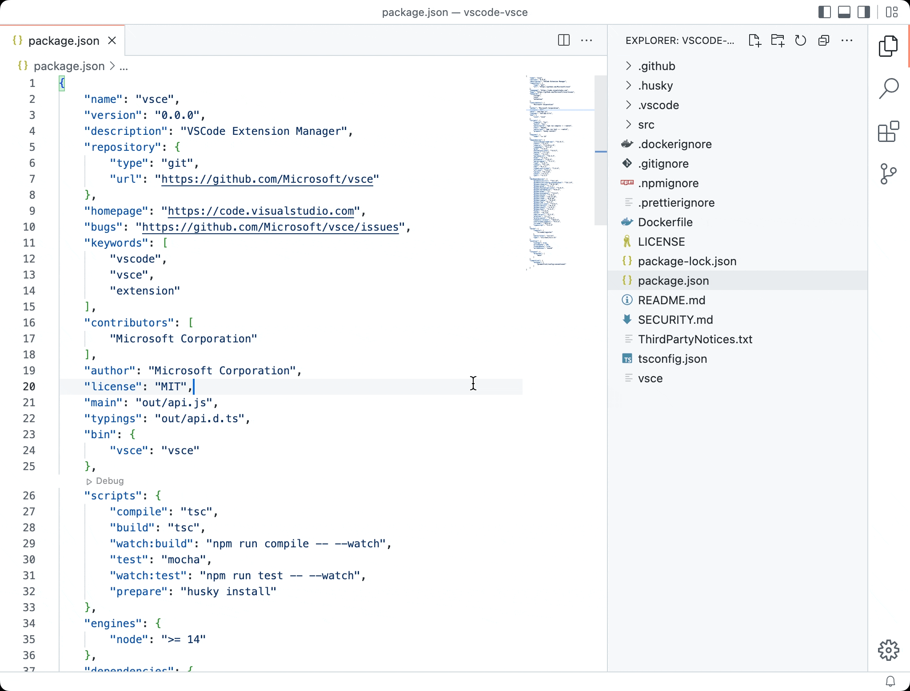
You can also import a Settings Profile file to restore your customizations.
Below shows importing a Settings Profile into VS Code:
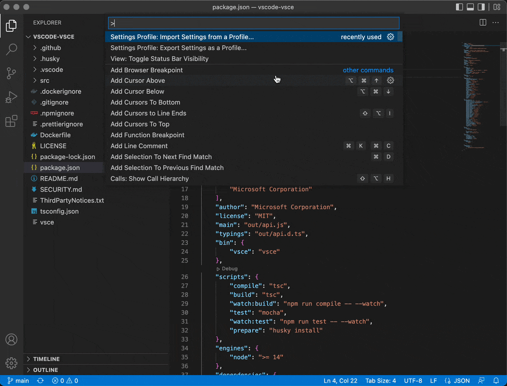
You can host your Settings Profile file in the cloud, for example save it as a public GitHub gist, and share the URL with others. One can import the Settings Profile file by providing the URL.
Note: At present, only the following UI customizations are included in the Settings Profile. More will be added in the future.
- Status bar items visibility
- Activity Bar, Bottom Panel & Side Panel items visibility and order
- Views visibility, location and order
TypeScript 4.7 Support
This update includes support for the upcoming TypeScript 4.7 release. See the TypeScript 4.7 iteration plan for more details on what the TypeScript team is currently working on. Some highlights:
- Jump directly to a JavaScript implementation of a library function using the new Go to Source Definition command. You can learn more about this feature and share feedback in TypeScript issue #49003.
- Snippets for completing methods as object members.
- Group-aware Organize Imports.
To start using the TypeScript 4.7 nightly builds, install the TypeScript Nightly extension.
Extension authoring
Tab API
We have finalized the read-only side of the tabs API (closing a tab is also supported) marking the completion of one of our most upvoted issues microsoft/vscode#15178. This exposes information such as how many groups there are, what tabs are open, what tabs are active, what type of editors a tab represents, and more! More information can be found in the vscode.d.ts file with the entrypoint into the API being window.tabGroups.
Notebook change and save events
We have finalized two notebook-related events:
vscode.workspace.onDidSaveNotebookDocument- An event that fires whenever a notebook has been saved.vscode.workspace.onDidChangeNotebookDocument- An event that fires whenever a notebook has been changed. That includes structural changes, like adding or remove cells, as well as cell changes, like changing output or metadata.
Support for non-recursive workspace file watchers
In previous milestones, we announced that the createFileSystemWatcher API can be used to watch any folder on disk as long as the folder is not inside the opened workspace. We have now relaxed this restriction and allow non-recursive file watchers anywhere, even inside the opened workspace. Non-recursive watchers have the advantage that configured settings for excludes (files.watcherExclude) do not apply so you can be sure that the file watcher will only emit for the paths you subscribe to.
We are working on full support for recursive watchers with custom exclude rules for extensions, so stay tuned for more!
UX Guidelines
The UX Guidelines for extension authors has been redone to have its own table of contents, where you can find best practices for using the various VS Code user interface elements. Specific topics discuss the recommended Do's and Don't's when creating UI for your extensions so that they seamlessly integrate within VS Code.
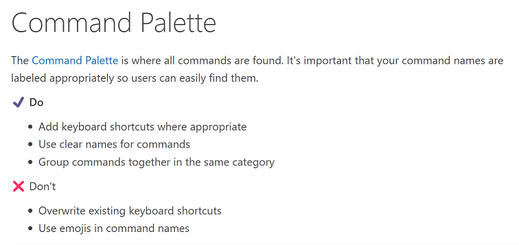
Running extension tests
Before, VS Code would exit the extension host process as soon as test running was finished. Now, when running extension tests, VS Code will first go through the regular deactivate flow and only afterwards exit. This allows extensions that spawn processes to better clean up after themselves.
Dropping files into custom trees
Building on the recently finalized tree drag and drop API, we now have basic support for dropping files from the OS into extension tree views using the text/uri-list MIME type.
Debugger extension authoring
UI for supportSuspendDebuggee and supportTerminateDebuggee
The disconnect request has two extra options that enable a client to control what happens to a debuggee when disconnecting:
suspendDebuggeeindicates whether the debuggee should stay suspended after disconnection.terminateDebuggeeindicates whether the debuggee should be terminated when the debugger is disconnected.
A debug adapter can use the capabilities supportSuspendDebuggee and supportTerminateDebuggee to signal that it supports these options. When supported, a dropdown will appear next to the stop button in the debug toolbar with extra disconnect commands.
For example, in a "launch"-type debug session, for a debug adapter that supports both capabilities, the default toolbar button will be the normal Stop button, but the dropdown will include Disconnect (terminateDebuggee: false) and Disconnect and Suspend (terminateDebuggee: false, suspendDebuggee: true).
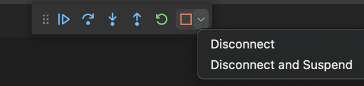
Language Server Protocol
Support for notebooks and pull diagnostics has been moved out of the proposed state to be ready to ship the 3.17 release. New versions of the corresponding client and server libraries have been published to npm.
Proposed APIs
Every milestone comes with new proposed APIs and extension authors can try them out. As always, we want your feedback. Here are the steps to try out a proposed API:
- Find a proposal that you want to try and add its name to
package.json#enabledApiProposals. - Use the latest vscode-dts and run
vscode-dts dev. It will download the correspondingd.tsfiles into your workspace. - You can now program against the proposal.
You cannot publish an extension that uses a proposed API. There may be breaking changes in the next release and we never want to break existing extensions.
Drop into editor
The proposed text editor drop API lets extensions handle drops into text editors. These drop events can come from within VS Code—such as dragging a file from VS Code's Explorer into a text editor—or can be generated by dropping a file from your operating system into VS Code.
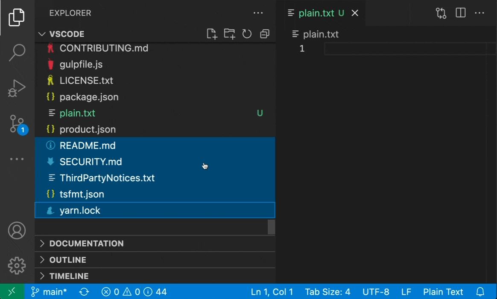
This iteration we've switched this API to a provider based model. We've also created a new extension sample that demonstrates how to use this api.
Badges on views
The new proposal for adding badges to views is available to try out. Similar to how badges work on views provided by VS Code core, extensions can use this API proposal to add number badges to views.
Engineering
Playwright for Electron smoke tests
We have been using Playwright for our web-based smoke tests for a long time. However, our Electron-based smoke tests were still relying on our own custom solution. With the Electron support in Playwright, we were able to reuse most of our web-based smoke test code and use it for our Electron smoke tests too. We are excited to now use the Trace Viewer to diagnose failing smoke tests post-mortem.
New localization pipeline for extensions
VS Code supports a number of display languages that you can enable by installing a language pack. These are great for localizing VS Code itself and built-in extensions to VS Code. This iteration, we have started the standardization effort for localizing extensions that aren't built-in that the team owns. You'll see the results of this effort in the GitHub Repositories and Azure Repos extensions as their common dependency extension, Remote Repositories, is the first extension to onboard to this.
Next iteration, we will continue this standardization effort and onboard more extensions. The Python extension is currently in progress and GitHub Repositories and Azure Repos will be quick to follow. We want to get to a point where every extension owned by the team is localized and any new extension created in the future will be able to onboard with ease so that users who aren't native English speakers can have a great experience in VS Code.
Documentation
Rust in VS Code
There is a new Rust in Visual Studio Code topic describing Rust programming language support in VS Code with the rust-analyzer extension. The rust-analyzer extension includes rich language features such as code completions, linting, refactorings, debugging, and more.
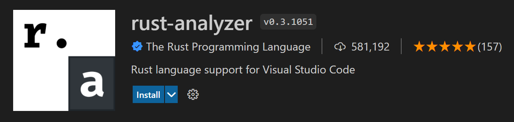
Notable fixes
- 114844 Allow to skip restore editors from previous session from crash dialog
- 127936 Allow to set
files.encodingas language specific setting for files on startup - 138461 Emmet autocomplete inside a pair of [ ] in a React file is wrong
- 139392 Confirmation of Clear Recent projects
- 139950 When a breakpoint is hit, the caret (cursor) should move to that line
- 145265 Terminal on Windows uses cmd /C, this corrupts passed arguments
- 146406 Powerline symbols in the terminal get wrong colors
- 146977 Declare folder support in Info.plist on macOS
- 147104 Unable to finish logging in to GitHub
Thank you
Last but certainly not least, a big Thank You to the contributors of VS Code.
Web extensions
Extension authors for enabling extensions that run code as web extensions (the list below is between March 28 2022 and May 1 2022):
- Logos for VS Code (Aarnav Tale)
- Copy Word in Cursor (Alessandro Fragnani)
- Delphi Keymap (Alessandro Fragnani)
- Pascal (Alessandro Fragnani)
- Separators (Alessandro Fragnani)
- Tagged Comment (Alessandro Fragnani)
- NeuroViewer (Anibal Solon)
- sb4-extension (arrow2nd)
- DeloresDevDev (bolinfest)
- VSCode Remote Server (btwiuse)
- Text Toolbox (Carlo Cardella)
- CloudStudio.common (CloudStudio)
- Vsnips (corvofeng)
- Const & Props Snippets (dein Software)
- dein Snippets Pack (dein Software)
- EVSCode Web IDE Connector (web, experimental) (Elrond)
- String To Any Case (gauseen)
- Image Gallery (GeriYoco)
- 模袋云-modelo (heekei zhuang)
- sigma (humpalum)
- My Snippets (Jaedeok Kim)
- GCS Uploader (kb-devs)
- TEI Japanese Editor Web (ldas)
- tal7aouy.indent-colorizer (Mhammed Talhaouy)
- minim-tools.m-web (minim-tools)
- UUID Generator (Motivesoft)
- TyranoScript syntax (orukred)
- VDM VSCode (Overture)
- Excalidraw (pomdtr)
- WebGL GLSL Editor (Rácz Zalán)
- Vue (Rahul Kadyan)
- VueDX (Rahul Kadyan)
- BDD Goto Step (rioj7)
- Extra Context (rioj7)
- web_prolin_emulator (runthoser)
- Go Nav Bar (Scotthew)
- yaist-vscode (toyjack)
- Pyodide Runner (tym-inc)
- Import Cost (Wix)
- Lawtext (yamachi)
- ZG Assembler (ZENG GE)
Issue tracking
Contributions to our issue tracking:
- John Murray (@gjsjohnmurray)
- Andrii Dieiev (@IllusionMH)
- Simon Chan (@yume-chan)
- Lemmingh (@Lemmingh)
Pull requests
Contributions to vscode:
- @100paperkite
- Fixes #146305 PR #146449
- Fixes #147420 PR #147930
- @a-stewart (Anthony Stewart)
- Create an empty div.message-actions-container when no actions provided PR #140578
- Update the colouring of links in banner markdown PR #140581
- Rename user facing instances of SCM to Source Control PR #146742
- @AkatQuas (Akat): fix(markdown): avoid considering link references/sources in code sections PR #146826
- @amanasifkhalid (Aman Khalid)
- Close #143241: Testing UI filter survives window reload PR #147344
- Fix #146166: Snippet transform preserves existing camel/Pascal case PR #147422
- @ambar (ambar): fix parenthesis encoding in unicode highlighting PR #146248
- @andschwa (Andy Schwartzmeyer): Delete built-in PowerShell snippets PR #146459
- @babakks (Babak K. Shandiz): Ask user to select PR templates when forking a repository PR #143733
- @Balastrong (Leonardo Montini)
- 145367 Added cwd to terminal name if present PR #145620
- Replaced true and false with on and off in debug.inlineValues PR #146543
- @bytemain (Artin): Fix
TerminalProfilenot throw PR #143251 - @cdce8p (Marc Mueller): Fix
gitgetBranch [v1.65.0] PR #144449 - @CGNonofr (Loïc Mangeonjean): Fix freezed folding blocks while computing new ones PR #146545
- @dlech (David Lechner): Fix editor eating ContextMenu key when contexmenu is disabled PR #146968
- @eamodio (Eric Amodio): Fixes #140787 watches proper worktree dir PR #140789
- @gabritto (Gabriela Araujo Britto): Add support for label details in TS completion item PR #146270
- @gjsjohnmurray (John Murray): Add 'Evaluate in Debug Console' and 'Add to Watch' to palette PR #146775
- @heartacker: add the git.fetch action to the first header menu PR #137940
- @hello-smile6: Update package.json PR #146278
- @IllusionMH (Andrii Dieiev): Fix version in error message PR #147750
- @ImCa0 (ImCaO): Fix spell check errors in translatable strings PR #147234
- @jhgg (Jake): feat: inlay hints displayStyle PR #145470
- @jlelong (Jerome Lelong): Update to vscode-latex-basics 1.3.0 PR #146308
- @jsjoeio (Joe Previte)
- refactor(workbench.ts): update outdated comment PR #146364
- fix(service-worker): allow webview resources to be served from same domain PR #147467
- @laurentlb (Laurent Le Brun)
- Comments panel: use the date of the last reply PR #147922
- Comments panel: do not truncate the author name PR #147924
- @luoriyuhui21 (Keming Liang): Add a setting to ignore dirty tabs in workbench.editor.limit.value. PR #144545
- @manunamz (manunam): Update markdownRenderer.ts path in docstring. PR #146332
- @matthewjamesadam (Matt Adam): Implement badge API for webviews and treeviews PR #144775
- @mbelsky (Max Belsky): Disable a breakpoint on shift+click PR #147598
- @michaelkuhn (Michael Kuhn): Unify and fix Solarized token colors PR #142883
- @neeleshb (Neelesh Bodas): Misc. A11y fixes for VSCode PR #145775
- @nesk (Johann Pardanaud): Improve UX for markdown snippets PR #146431
- @quanzhuo (Quan Zhuo)
- Fix issue #145134, fetch all repos for authenticated user PR #145203
- fix #140612: toggle the Toggle Button when the context line number la… PR #147141
- @Suven-p (Suven-p): Add action to hide all tests PR #148003
- @tharbakim: Fix detection of CSS Preprocessor Comments at Start of File in Emmet Extension PR #146121
- @thekorn (Markus Korn): git extension: if 'git.untrackedChanges' is set to 'hidden' ignore untracked files when running 'git status' (fixes microsoft/vscode#131020) PR #131030
- @yepitschunked: [Git watcher] ignore watchman cookies PR #127702
Contributions to vscode-css-languageservice:
- @romainmenke (Romain Menke): fix selector specificity display for
:langand similar pseudo selectors PR #268
Contributions to vscode-generator-code:
- @rupeshs (Rupesh Sreeraman): Fix for ext-snippets quick start documentation PR #340
Contributions to vscode-js-debug:
Contributions to vscode-pull-request-github:
- @hoontae24: Support the copied permalink for Github Enterprise URL PR #3460
Contributions to debug-adapter-protocol:
- @KamasamaK: Fix some typos PR #264
- @peterderivaz (Peter de Rivaz): Fix description for SetBreakpointsArguments PR #261
- @polinasok: Update adapters.md for Go debug adapter PR #262
- @WardenGnaw (Andrew Wang): Remove extra newline in adapters.md PR #263
Contributions to language-server-protocol:
Contributions to monaco-editor:
- @DetachHead: add
outkeyword to typescript PR #3066 - @Yash-Singh1 (Yash Singh): feat: add fr units for css grid PR #3078